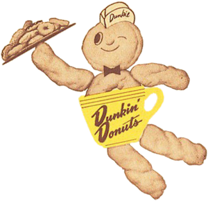

Ons verhaal
Terug in de tijd
Dunkin' Nederland!
Dunkin' opende aan het begin van 2017 de eerste Dunkin' Donuts-store in Nederland en in 2020 de eerste in België. Het bedrijf kondigt aan dat het op het punt staat 'om Nederland en België te veroveren'.

We call it dunkin' the donut.
We call it dunkin' the donut.
We call it dunkin' the donut.
We call it dunkin' the donut.
Meer dan 12.200 verstigingen wereldwijd!
Dunkin' (voormalig Dunkin' Donuts), opgericht in 1950, telt meer dan 12.200 vestigingen in 45 landen wereldwijd. Het bedrijf draait grotendeels op franchise-deelnemers. Europa telt 240 Dunkin' winkels.

"Klinkt goed, smaakt nog beter!"
Het assortiment smaken wordt continu uitgebreid. De donuts worden gemaakt in een centrale bakkerij in Utrecht. De donuts worden ook aan huis bezorgd. Sinds enkele jaren biedt supermarktketen Jumbo de lekkernij aan.

Store finder

20 KM
-
Almere Stationsstraat
Stationsstraat 26
Almere, Flevoland 1315 KJ
NL
088 377 8818
Open Now
-
Amsterdam Arena Boulevard
Johan Cruijff Boulevard 135
Amsterdam, 1102 EJ
NL
088 377 8813
Open Now
-
Bataviastad
Bataviaplein 132
Lelystad, Flevoland 8242 PN
NL
088 377 8829
Open Now
-
Brussels Airport
Leopoldlaan
Zaventem, Vlaams Gewest 1930
BE
Open Now
-
Den Bosch Markt
Markt 44
Den Bosch, 1511 JX
NL
088 377 8850
Open Now
-
Den Haag Spuistraat
Spui 10b
Den Haag, Zuid-Holland 251 BS
NL
088 377 8817
Open Now
-
Eindhoven piazza
Piazza 25
Eindhoven, Noord-Brabant 5611 AE
NL
088 377 8811
Open Now
-
Leiden Centraal station
Stationsplein 3B
Leiden, 2312 AJ
NL
088 377 8843
Open Now